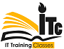

ootstrap Example</title>
  <meta charset="utf-8">
  <meta name="viewport" content="width=device-width, initial-scale=1">
  <link href="https://cdn.jsdelivr.net/npm/bootstrap@5.3.8/dist/css/bootstrap.min.css" rel="stylesheet">
  <script src="https://cdn.jsdelivr.net/npm/bootstrap@5.3.8/dist/js/bootstrap.bundle.min.js"></script>
</head>
<body>

<nav class="navbar navbar-expand-sm bg-dark navbar-dark">
  <div class="container-fluid">
   <title>The World's best Software Development Study Portal </title>
    <a class="navbar-brand" href="#">
      
    </a>
  </div>
</nav>

<div class="container-fluid mt-3">
    <nav class="navbar navbar-expand-sm bg-light">

<ul class="navbar-nav">

<li class="nav-item">

<a class="nav-link" href="#">html</a>

</li>

<li class="nav-item">

<a class="nav-link" href="#">javascript</a>

</li>

<li class="nav-item">

<a class="nav-link" href="#">bootstrap</a>

</li>

</ul>

</nav>


<div class="container-fluid">
<title>ITCS offers globally recognized technology and cybersecurity training programs designed to provide hands-on skills and career-ready certifications.</title>      
      
<meta name = "Key Training Programs
ITCS provides a wide range of programs across technology and cybersecurity fields, including:
Cybersecurity: Courses in ethical hacking, network security, penetration testing, and system defense, including hands-on labs and real-world scenarios to prepare students for industry challenges. 
2
Full-Stack Web Development: Training in front-end and back-end technologies such as HTML, CSS, JavaScript, React, Node.js, and Laravel, with project-based learning to build practical coding skills. 
2
Data Science and Artificial Intelligence: Programs covering data analysis, machine learning, AI, and data visualization, enabling students to work with real datasets and predictive models. 
1
Cloud Computing: Training on platforms like AWS, Microsoft Azure, and Google Cloud, including cloud architecture, deployment, and migration strategies. 
2
Networking: Courses on computer networks, protocols, IP addressing, subnetting, and network troubleshooting. 
2
Project Management and Business Analysis: PMP, Six Sigma, Agile Scrum, and business analysis courses that teach process management, risk assessment, and stakeholder communication. 
2


5 Sources
Delivery Methods and Flexibility
ITCS offers both online and in-person training, with interactive sessions, webinars, and 24/7 access to course materials. This flexibility allows learners to study at their own pace, making it suitable for working professionals and international students. Programs include practical assignments, mentorship, and lab exercises to ensure hands-on experience. 
itcsinstituteofficial.com
+1
Certification and Recognition
ITCS certifications are globally recognized and respected by leading companies in technology and cybersecurity industries. Completing these programs provides a competitive edge in the job market and validates professional skills in areas such as cybersecurity, cloud computing, and IT project management. 
itcsinstituteofficial.com
+1
Additional Support
Students benefit from placement support, resume building, mock interviews, and portfolio development, helping them transition from training to employment. ITCS also offers internship opportunities and mentorship under experienced instructors, enhancing practical learning and career readiness. 
itcsinstituteofficial.com
Summary
ITCS training programs are designed to equip learners with practical, industry-relevant skills in technology, cybersecurity, and IT management. With flexible learning options, hands-on projects, and globally recognized certifications, ITCS prepares students for successful careers in the rapidly evolving tech landscape">    
</head>      
<body>      
    <p>Welcome to my first web page.</p>  

 </div>

</body>
</html>
